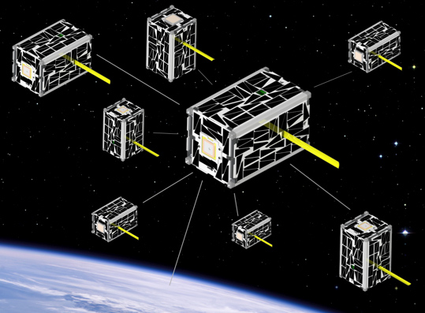
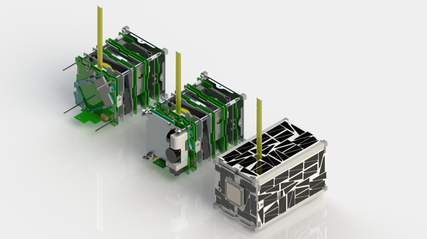
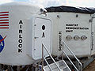
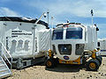
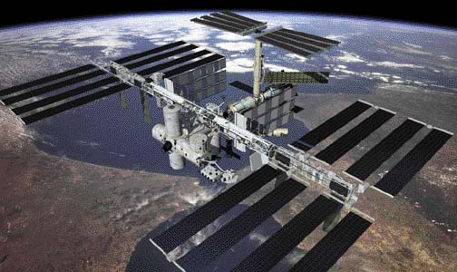
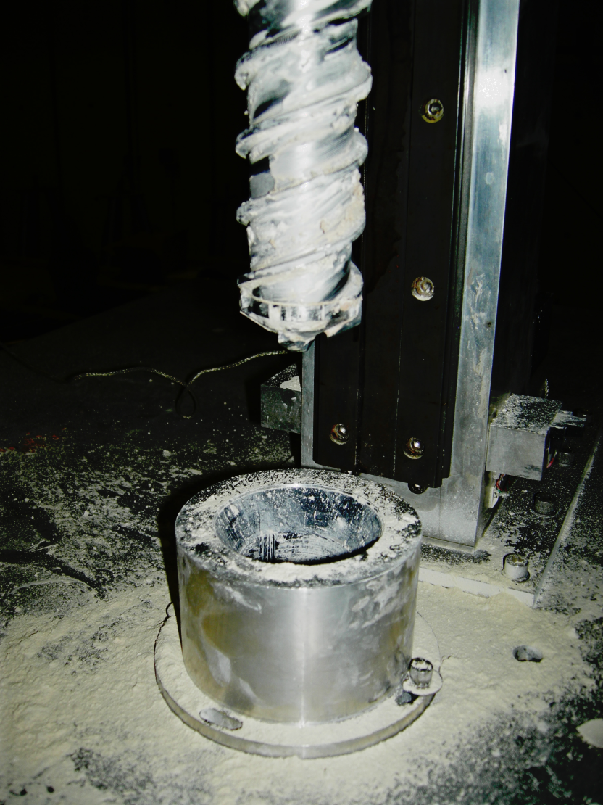
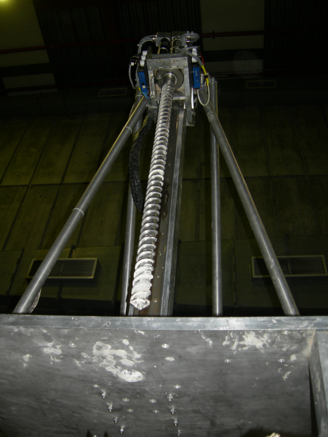
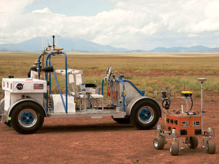
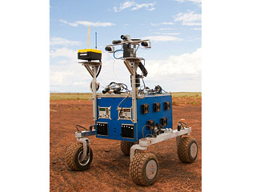

This is the main page for the PLEXIL wiki. For PLEXIL’s main project page, which has downloads and other information, go here: https://github.com/plexil-group/plexil
Updated 18 Aug 2021
What is PLEXIL?¶
PLEXIL (Plan Execution Interchange Language) is a language for representing plans for automation, as well a technology for executing these plans on real or simulated systems. PLEXIL has been used in robotics, control of unmanned vehicles, automation of operations in human habitats, and systems and simulations involving intelligent software agents. Scroll down for some examples.
PLEXIL was designed initially to meet the requirements of flexible, efficient and reliable plan execution in space mission operations. It is compact, semantically clear, and deterministic given the same sequence of events from the external world. At the same time, the language is quite expressive and can represent branches, loops, time- and event- driven activities, concurrent activities, sequences, and temporal constraints. The core syntax of the language is simple and uniform, making plan interpretation simple and efficient, while enabling the application of validation and testing techniques.
Accompanying PLEXIL is an execution engine, or executive, which implements efficiently the PLEXIL language and provides interfaces to controlled systems as well as decision support systems from which plans may be sent. The PLEXIL software suite also includes graphical plan execution viewers, a static plan checker, and two different plan simulators.
PLEXIL was originally developed as a collaborative effort between researchers at NASA and Carnegie Mellon University, funded by NASA’s Mars Technology Program through the Research Institute for Advanced Computer Science (RIACS) in the Universities Space Research Association (USRA). Since then it has continually evolved through application on NASA projects, which have included the control of prototype planetary rovers and habitats, drilling equipment, and demonstration of adjustable automation for International Space Station operations.
See below for a brief description of major PLEXIL applications to date. See the References chapter of the PLEXIL manual for more information on the background and applications of PLEXIL.
See the sidebar (column to the left of this page) for links to many PLEXIL topics.
If you have questions, please email us at plexil-support@lists.sourceforge.net
NASA Applications¶
OceanWATERS¶
The open source Ocean Worlds Autonomy Testbed for Exploration Research and Simulation (OceanWATERS) uses PLEXIL for onboard lander autonomy.
{kind=link}
Image Credit: NASA¶
Cockpit Hierarchical Activity Planning and Execution (CHAP-E)¶
In this prototypical aircraft decision support system under development at NASA, PLEXIL procedures for aviation are authored as well as automatically generated from various higher level representations.
{kind=link}
Image Credit: NASA¶
Autonomy Operating System (AOS)¶
This project focuses on automation of FAA piloting procedures towards the goal of enabling Unmanned Aerial Vehicles (UAVs) to fly in the national airspace. The navigation component of this software is a PLEXIL application and has been flight-tested on autonomous rotorcraft drones.
{kind=link}
Image Credit: B&H Photo¶
ICAROUS¶
PLEXIL is a component of this formal methods based software suite for unmanned aircraft, open-sourced by NASA Langley.
{kind=link}
Image Credit: NASA¶
Lunar Atmosphere and Dust Environment Explorer (LADEE)¶
PLEXIL was incorporated into LADEE’s flight software as an experiment in automating the handling of various conditions sensed by a spacecraft component. Although this experiment did not make it into space, it motivated a port of the PLEXIL software to the VxWorks embedded operating system, and a host of improvements to make PLEXIL more robust for flight applications.
{kind=link}
Image Credit: NASA¶
Edison Demonstration of Smallsat Networks¶
PLEXIL was used as the executive in an early version of the EDSN software architecture. Satellite operations were encoded in a PLEXIL library that would reside and be executed onboard the craft. Although this version of the software architecture was not the final flight version, this project was PLEXIL’s foray into small spacecraft automation.
 {kind=link}
{kind=link}
Image Credit: NASA
Habitat Demonstration Unit¶
PLEXIL ran onboard NASA’s Deep Space Habitat and Habitat Demonstration Unit (DSH/HDU), a functional living and working station designed to accommodate a group of astronauts on deep space missions. For two consecutive years, the DSH was field tested during the Desert Research and Technologies Studies (Desert RATS), where PLEXIL was used to demonstrate automated control of several DSH subsystems.
 {kind=link}
{kind=link}
Image Credit: NASA
International Space Station¶
PLEXIL has been used to demonstrate automation for International Space Station operations.
{kind=link}
{kind=link}
Image Credit: NASA
Mars Drill¶
PLEXIL has served as the executive for the Drilling Automation for Mars Exploration (DAME) drilling application. Field tested at the Haughton Crater on Devon Island in Canada’s Nunavut Territory north of Ontario and Quebec, this is perhaps the first fully automated drill rig.
 {kind=link}
{kind=link}
Image Credit: NASA/Ames
K10 Rover¶
PLEXIL was used to operate the K10 rover in a coordinated demonstration of Human Robot Interaction, Surface Handling and Surface Mobility Systems. NASA Ames Research Center’s K10 rovers are field work rovers designed for human-paced operational tasks such as assembly and inspection. Running software developed at Ames, the K10 rover performed an autonomous 360-degree inspection of the larger SCOUT rover, taking a series of high-resolution pictures at pre-determined locations.
 {kind=link}
{kind=link}
Image Credit: NASA/Ames